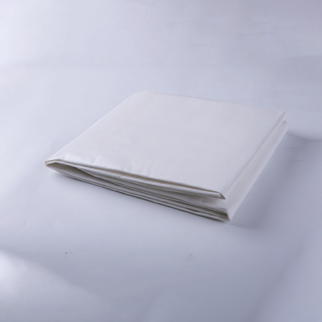

Patient transfers — whether moving a patient from bed to stretcher, transferring between hospital departments, or loading into an ambulance — are among the most physically demanding and injury-prone tasks in healthcare. Manual lifting without transfer aids accounts for a significant proportion of musculoskeletal injuries among nursing staff and orderlies worldwide. Disposable patient transfer sheets address this challenge by providing a low-friction, single-use surface that reduces the force required to slide a patient from one surface to another.
Unlike reusable transfer slings or draw sheets that require laundering between uses, disposable transfer sheets are used once and discarded. This eliminates cross-contamination risk entirely, reduces the logistical burden on laundry services, and ensures that every transfer begins with a clean, intact sheet at predictable cost. For facilities managing high patient throughput — emergency departments, operating theatres, ambulance services, and inter-facility transport providers — disposable transfer sheets are an essential item that balances patient safety, staff ergonomics, and infection control.
What Are Disposable Patient Transfer Sheets?
A disposable patient transfer sheet is a flat, rectangular sheet made from low-friction, high-strength nonwoven materials. It is placed beneath the patient (or partially beneath, depending on the transfer scenario) and used as a glide surface when sliding the patient from one surface to another — for example, from a hospital bed to a stretcher trolley, from an ambulance cot to an emergency department bed, or from an operating table to a recovery bed.
The defining characteristics of a quality disposable transfer sheet are:
- Low-friction surface. The sheet's outer surface — typically a smooth nonwoven or PE-laminated layer — significantly reduces the coefficient of friction between the sheet and the receiving surface (stretcher mattress, bed surface, or trolley). This allows two or three caregivers to move a patient with far less effort than would be required for a direct lift.
- High tensile strength. The sheet must support the patient's full body weight during the transfer without tearing, stretching, or delaminating. Quality transfer sheets are rated for safe working loads (SWL) of 150-250 kg, covering the full range of adult patient weights with appropriate safety margins.
- Hand grips or handles. Many transfer sheets include reinforced grip tabs or integrated handles along the edges, giving caregivers secure handholds during the transfer. These reduce the risk of hand slippage and improve coordination among the transfer team.
- Fluid resistance. In emergency and intra-hospital transfer scenarios, the sheet may be exposed to blood, wound exudate, or other body fluids. A fluid-resistant or fluid-proof backing layer protects the receiving surface and reduces post-transfer cleaning requirements.
Materials and Construction
The choice of materials determines the transfer sheet's friction characteristics, strength, fluid resistance, and cost. Understanding the material options helps procurement managers select the right product for their specific use cases.
Nonwoven Fabric (SMS / SMMS)
Spunbond-meltblown-spunbond (SMS) nonwoven fabric is the most common material for disposable transfer sheets. The outer spunbond layers provide tensile strength and a smooth, low-friction surface, while the meltblown inner layer adds softness and a degree of fluid barrier protection.
- Pros. Lightweight, breathable, and cost-effective. Smooth surface provides good glide characteristics on most stretcher and bed surfaces. Available in a range of GSM (grams per square metre) weights, allowing facilities to balance cost against strength. Soft against patient skin, reducing discomfort during transfer.
- Cons. Standard SMS nonwoven is not fully fluid-proof — it resists light moisture but will allow heavier fluid penetration. Tensile strength is adequate for most adult patients but may be insufficient for bariatric transfers without additional reinforcement.
PE-Laminated Nonwoven
PE-laminated transfer sheets combine a nonwoven fabric layer with a thin polyethylene (PE) film coating on one or both sides. The PE film provides a highly effective fluid barrier and an even smoother glide surface than nonwoven alone.
- Pros. Superior fluid resistance — suitable for transfers involving trauma patients, wound drainage, or incontinence. Excellent glide characteristics due to the smooth PE surface. Higher tensile strength than standard nonwoven at equivalent GSM, thanks to the reinforcing film layer. Wipeable surface allows spot-cleaning if needed during extended use.
- Cons. Slightly higher cost than standard nonwoven. PE film is less breathable, which may cause patient discomfort during extended transfers (though transfer sheets are typically in use for only a few minutes). Less environmentally friendly than pure nonwoven due to the plastic film component.
Nonwoven with SAP (Super Absorbent Polymer)
Some transfer sheets incorporate a layer of super absorbent polymer (SAP) between nonwoven layers. These are designed for transfers where incontinence or wound drainage is expected, combining the glide function of a transfer sheet with the absorption capacity of an underpad.
- Pros. Absorbs and locks away body fluids during transfer, preventing pooling on the receiving surface. Dual-purpose — serves as both transfer aid and protective underpad. Reduces post-transfer cleaning time.
- Cons. Higher cost. Added bulk from the SAP layer makes the sheet thicker and less flexible. SAP may reduce the glide smoothness slightly compared to plain PE-laminated sheets.
| Property | Nonwoven (SMS) | PE-Laminated | Nonwoven + SAP |
|---|---|---|---|
| Cost per unit | Lowest | Moderate | Moderate to high |
| Glide smoothness | Good | Excellent | Good |
| Fluid resistance | Moderate | Excellent | Excellent (with absorption) |
| Tensile strength | Good | Very good | Good |
| Breathability | Good | Poor | Moderate |
| Best for | Standard bed-to-stretcher transfers, intra-hospital moves | Emergency, trauma, ambulance, surgical transfers | Incontinent patients, wound drainage scenarios |
"We switched our ambulance service from reusable transfer sheets to disposable PE-laminated sheets two years ago. The infection control improvement was immediate — no more cross-contamination concerns between patients. And our paramedics reported that the sheets glide much more smoothly on stretcher surfaces, making transfers faster and safer." — Fleet Manager, Regional Ambulance Service
Size Selection
Transfer sheet dimensions should match the patient population and the receiving surfaces (stretcher, bed, trolley) used in your facility:
- Standard adult (90 × 180 cm / 36 × 72 inches). The most common size, suitable for the majority of adult patients on standard hospital beds and stretcher trolleys. Provides adequate coverage and grip area for patients up to approximately 120 kg when used with a two- or three-person transfer team.
- Large / wide adult (100 × 200 cm / 40 × 80 inches). Recommended for facilities serving larger patient populations or where extra coverage is needed. The additional width provides more grip area for the transfer team and ensures full coverage on wider stretcher surfaces.
- Bariatric (120 × 220 cm / 48 × 88 inches or larger). Designed for bariatric patients, these sheets provide full body coverage and additional grip area. Must be paired with an appropriately rated safe working load — bariatric transfer sheets should be rated for 250 kg or higher. Bariatric transfer sheets often include reinforced handles or grip tabs to accommodate the additional weight and the larger transfer team required.
- Paediatric (60 × 120 cm / 24 × 48 inches). Smaller size designed for paediatric patients. Provides proportional grip area for smaller receiving surfaces such as paediatric beds and incubator transfer platforms.
Sizing Best Practice
For most hospital environments, stocking a mix of standard adult (90 × 180 cm) and bariatric (120 × 220 cm) sheets covers the full patient range. Facilities serving paediatric populations should also maintain a paediatric size. Rather than stocking multiple intermediate sizes, standardising on two or three SKUs simplifies inventory management, enables larger volume orders, and reduces the risk of staff grabbing the wrong size during time-critical transfers.
Safe Working Load (SWL) and Weight Ratings
The safe working load is the maximum patient weight the transfer sheet is designed to support during a transfer. This is a critical specification that directly affects patient and staff safety.
| SWL Rating | Patient Population | Recommended Use |
|---|---|---|
| 150 kg (330 lbs) | Standard adult patients | General ward transfers, operating theatre, day surgery |
| 200 kg (440 lbs) | Larger adult patients | Emergency department, ICU, ambulance transfers |
| 250 kg+ (550 lbs+) | Bariatric patients | Bariatric wards, specialised ambulance services, inter-facility bariatric transfers |
When specifying transfer sheets for procurement, the SWL rating should be matched to the 95th percentile patient weight in your facility's patient population, with an additional safety margin of at least 20%. For example, if your facility's heaviest typical patient is 160 kg, a sheet rated for 200 kg provides adequate capacity with a 25% safety margin.
Infection Control Advantages
One of the most significant advantages of disposable transfer sheets over reusable alternatives is the elimination of cross-contamination risk. Consider the transfer lifecycle:
- Single patient, single use. Each disposable transfer sheet is used for one patient and then discarded. There is no possibility of pathogen transfer between patients via the sheet itself. This is particularly important for transfers involving patients with known or suspected infections (C. difficile, MRSA, VRE, or airborne pathogens) where reusable sheets would require special handling and high-temperature laundering protocols.
- No laundering required. Reusable transfer sheets must be collected, transported to the laundry, washed at appropriate temperatures, dried, and redistributed. This process consumes water, energy, and staff time, and introduces the risk of inadequate cleaning if laundering protocols are not strictly followed. Disposable sheets eliminate the entire laundering chain.
- Reduced environmental cleaning. When a reusable transfer sheet leaks or soaks through during transfer, the receiving surface (stretcher mattress, bed) must be cleaned and disinfected before the next patient. A fluid-resistant disposable sheet prevents this contamination, reducing the time between patient arrivals in emergency and operating theatre settings.
- Traceability. Each batch of disposable transfer sheets can be traced by lot number, supporting quality assurance and recall processes. Reusable sheets, having passed through multiple laundering cycles, cannot be traced to a specific cleaning batch or quality check.
"Our infection control team pushed for the switch to disposable transfer sheets after a C. difficile outbreak on one of our wards. The logic was straightforward — if we remove the reusable sheet from the transfer process, we remove one potential vector entirely. The cost increase was marginal compared to the reduction in environmental cleaning time and the peace of mind for our staff." — Infection Control Lead, 350-Bed District General Hospital
Clinical Applications and Consumption Benchmarks
1. Emergency Department (ED)
Emergency departments see the highest transfer frequency of any hospital department. Every ambulance arrival requires at least one transfer (ambulance cot to ED bed), and many patients undergo additional transfers for imaging, procedures, or admission to inpatient wards.
- Recommended sheet type. PE-laminated, 90 × 180 cm or 100 × 200 cm, SWL 200 kg. Fluid resistance is essential given the unpredictable nature of emergency presentations.
- Consumption estimate. 1-3 sheets per patient depending on the number of transfers required. A busy ED receiving 80-120 patients per day may use 120-360 transfer sheets daily (3,600-10,800 per month).
2. Operating Theatre and Surgical Suites
Patients are transferred from ward bed to theatre trolley, from theatre trolley to operating table, and from operating table to recovery bed — often three transfers per surgical episode.
- Recommended sheet type. Nonwoven (SMS) or PE-laminated, 90 × 180 cm, SWL 150-200 kg. Nonwoven is often preferred in elective surgery where fluid exposure is predictable and minimal. PE-laminated is preferred for trauma or surgical cases where fluid exposure is likely.
- Consumption estimate. 2-4 sheets per surgical episode. A theatre complex performing 30-50 procedures per day uses 60-200 transfer sheets daily (1,800-6,000 per month).
3. Ambulance and Pre-Hospital Services
Ambulance crews use transfer sheets for patient loading (scene to ambulance cot) and unloading (ambulance cot to ED bed). In some services, a third transfer occurs if the patient is moved within the ambulance for treatment access.
- Recommended sheet type. PE-laminated, 90 × 180 cm or 100 × 200 cm, SWL 200 kg. Fluid resistance and durability are paramount in pre-hospital environments where transfers occur on uneven surfaces and in confined spaces.
- Consumption estimate. 1-2 sheets per call-out. An ambulance station responding to 20-40 call-outs per day uses 20-80 transfer sheets daily (600-2,400 per month per station).
4. Inter-Facility Patient Transport
Patients transferred between hospitals or from hospital to rehabilitation facilities require at least one transfer (origin bed to transport vehicle) and often a second (transport vehicle to destination bed).
- Recommended sheet type. Nonwoven or PE-laminated, 90 × 180 cm, SWL 150-200 kg depending on patient population. Transport services serving mixed patient populations should stock both standard and bariatric sizes.
- Consumption estimate. 2 sheets per transfer (origin and destination). A transport service completing 10-30 inter-facility transfers per day uses 20-60 sheets daily (600-1,800 per month).
5. Aged Care and Nursing Homes
Resident transfers within care homes (bed to wheelchair, bed to commode, bed to bath) and admissions to or discharges from hospitals require transfer sheets.
- Recommended sheet type. Nonwoven (SMS), 90 × 180 cm, SWL 150 kg. Nonwoven is cost-effective and provides adequate glide characteristics for the lower-frequency, lower-acuity transfers typical in aged care settings.
- Consumption estimate. 2-5 sheets per day for a 100-bed facility with moderate transfer needs (60-150 per month). Facilities with higher admission and discharge rates will use more.
Procurement Best Practices
For organisations purchasing disposable transfer sheets at scale, the following practices help optimise cost, quality, and supply continuity:
- Standardise on two or three SKUs. For most facilities, a standard adult size (90 × 180 cm) and a bariatric size (120 × 220 cm) cover the full patient range. Adding a third size (paediatric or wide adult) is optional depending on patient population. Fewer SKUs mean larger volume orders per SKU, better pricing, and reduced risk of stockouts on less-used sizes.
- Choose PE-laminated for high-risk departments. Emergency departments, ambulance services, and surgical suites should use PE-laminated sheets for their fluid resistance. Standard nonwoven sheets are adequate for elective surgery, ward transfers, and aged care.
- Maintain 4-6 weeks of par stock. Transfer sheets are bulky but lightweight and non-perishable. Storage requirements are manageable — a month's supply for a busy ED typically fits in a single supply room. Maintaining buffer stock protects against supply chain disruptions.
- Request samples for staff evaluation. Glide characteristics, handle comfort, and sheet stiffness are subjective qualities that affect staff confidence and patient experience. Request samples and have nursing staff and porters evaluate them in real transfer scenarios before committing to volume orders.
- Consider total cost, not just unit price. While reusable transfer sheets have a lower per-use material cost, the full lifecycle cost (collection, transport, laundering, redistribution, environmental cleaning after soiled transfers, infection control risk) often favours disposables when all factors are accounted for. A total cost analysis over 12 months typically shows disposables as competitive or cheaper than reusables for medium- to high-volume users.
"We reduced our total transfer sheet costs by 28% by switching from reusable to disposable PE-laminated sheets. The unit price looked higher at first glance, but when we factored in laundry costs, environmental cleaning time, and the elimination of cross-contamination incidents, the disposable option was clearly the better value. And our staff love that they always have a fresh, intact sheet — no more worrying about wear and tear on reusable ones." — Facilities Director, Multi-Site Private Hospital Group
Conclusion
Disposable patient transfer sheets are a small but critical component of safe patient handling programmes across hospitals, ambulance services, surgical centres, and aged care facilities. By providing a low-friction, single-use glide surface, they reduce the physical burden on caregivers, protect patients from transfer-related injuries, and eliminate cross-contamination risk inherent in reusable alternatives.
Selecting the right material — nonwoven for standard transfers, PE-laminated for fluid-exposure scenarios, or SAP-enhanced for incontinence management — and the appropriate size and weight rating for your patient population ensures safe, efficient transfers every time. Standardising on a limited number of SKUs, maintaining adequate par stock, and evaluating products through real-world staff trials are key procurement practices that deliver long-term value.
Newrise Medical manufactures disposable patient transfer sheets in nonwoven (SMS), PE-laminated, and nonwoven+SAP configurations, in standard adult, wide, and bariatric sizes, with safe working load ratings up to 250 kg. Individually packaged, CE marked, ISO 13485 certified production, and competitive bulk pricing. OEM customisation available for packaging, branding, and sheet dimensions. Contact us for samples and pricing →